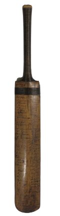
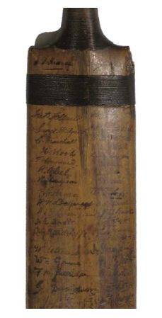
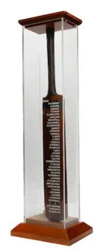
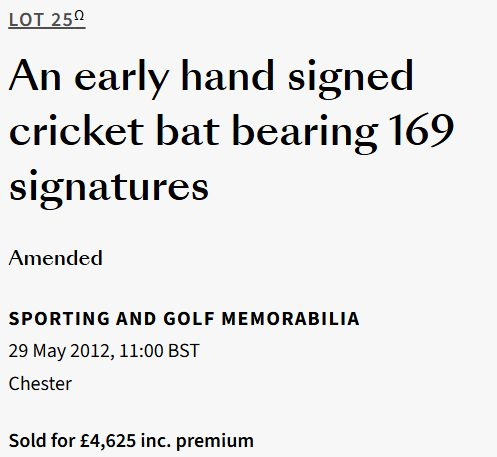
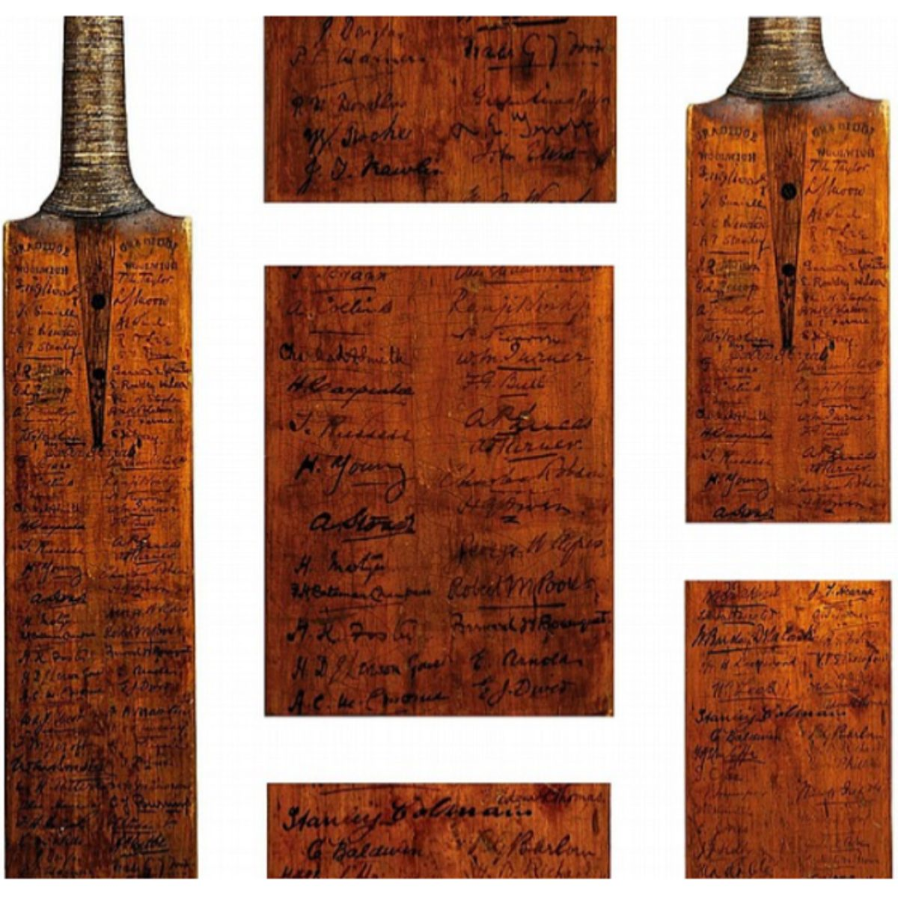
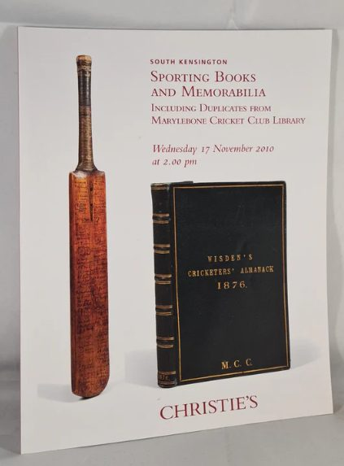
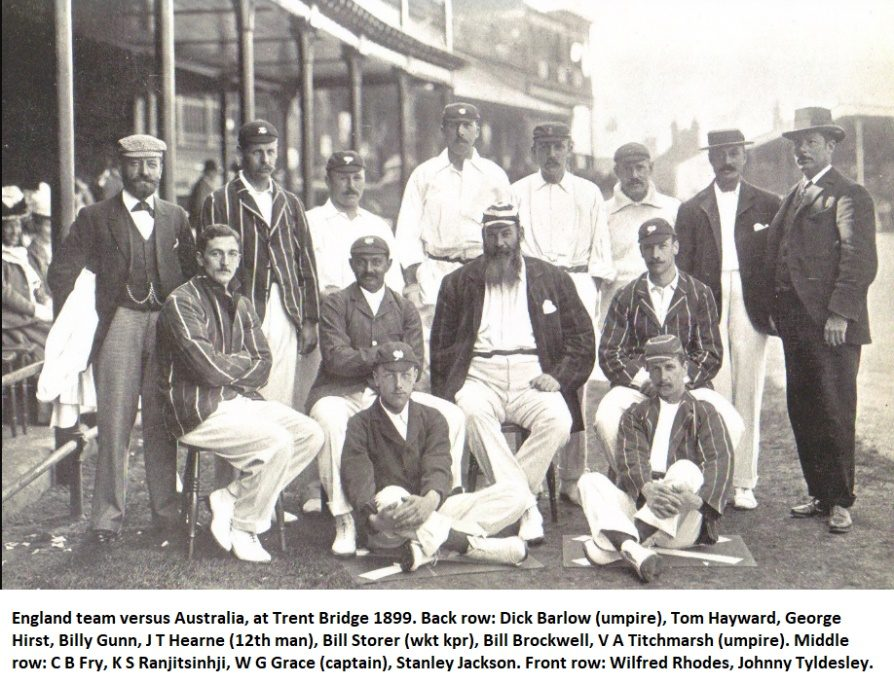
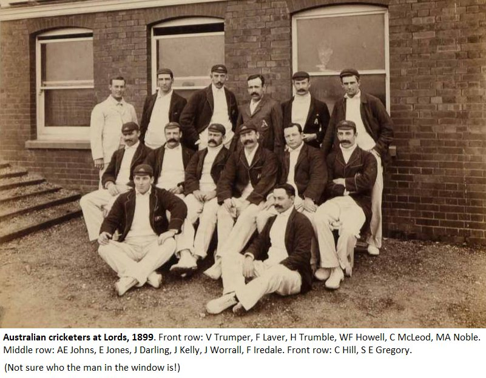
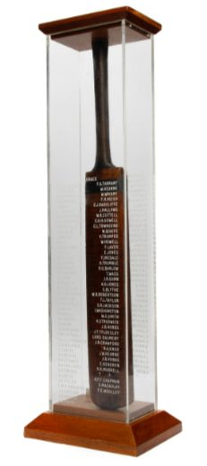
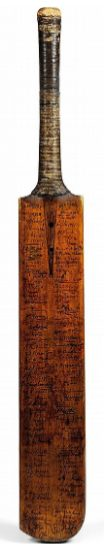

Two bats, hundreds of signatures
3. The Bats
The Bardswell Bat


In November 2006, the ‘Bardswell Bat’ was auctioned by Christies with an estimate of £5,000 to £8,000 pounds. Auction details here: https://www.christies.com/en/lot/lot-4804722
The vendor was described as ‘a descendant of the Bardswell family’ and the sale of the bat exceeded expectations, selling for £ 9,600
The auction lot contained the following note: It is believed the bat was presented to the Oxford and Lancashire cricketer, Gerald Bardswell, by W.G. Grace as one of Grace's own used bats.
Six years later, Bonhams auctioned the same bat in a custom-made display case for a reduced price of £ 4,625 pounds to a private collector.
Auction details here:


Extensive research indicates that this is the only bat ever attributed to Emily Bardswell.
However, there are many reasons to believe that the ‘Golden Age Cricket Bat’ is another bat that was once part of Emily Bardswell’s collection.
The Golden Age cricket bat

The Golden Age bat is a unique cricket bat, not only for the huge number of signatures (211) but also the iconic status of many of those who have signed it.
It is an irreplaceable piece of cricketing history.

In November 2010, the bat was offered for sale by Christies in London, England with an estimate of £20,000 to £30,000 pounds.
Although the bat featured on the cover of the auction catalogue and was described in the auctioneer’s notes as ‘a more profusely autographed bat than any other sold in these rooms,’ the bat failed to sell.
In May 2012, the same bat was offered for sale in Melbourne, Australia by Leski’s auctions, a specialist in cricket memorabilia.
Although the estimate was reduced to around £15,000 to £ 20,000 pounds ($30,000 to 40,000 AUD) and the owner was willing to pay for ‘insurance and delivery cost free to anywhere the purchaser requires’, the bat was passed in, once again.
What makes the Golden Age cricket bat so special

There is no other bat quite like the ‘Golden Age cricket bat’. Of the 211 signatures collected, there are fifteen Australian and sixty-five English test players. All bar one of the players in the photograph commemorating Grace’s last test match below have signed the bat.
They include K S Ranjitsinhji, one of the most innovative batsmen in history and India’s domestic first-class competition, The Ranji Trophy, is named in his honour.
C B Fry was the ultimate ‘all-rounder’, playing cricket and football for England. Tom Hayward scored over 1,000 runs in first-class cricket twenty years in succession and he remains one of only twenty-five men to score one hundred 100’s in first class cricket.
Wilfred Rhodes who forged a career spanning five decades (1899 to 1930), surpassing Grace as the oldest to play a test match aged 52 and did the double of 1,000 runs and 100 wickets in an English cricket season a record sixteen times.
The Australians of 1899 were equally iconic. Of the fifteen Australian signatures on the bat, five captained their country whilst six are members of The Australian cricket Hall of Fame.

This includes Victor Trumper, whose popularity was such that when he died aged 37, 250,000 mourners lined the route of the largest funeral procession ever seen in Sydney.
Like Trumper, M A ‘Monty’ Noble is another honoured with a stand at the Sydney Cricket Ground, whilst Clem Hill has a stand at Adelaide Oval.
Fred ‘The Demon’ Spofforth was Australia’s original fast-bowling tearaway and the first man to take a test hat-trick, fifty of his 94 test wickets were bowled and WG Grace considered Spofforth to have been the original inventor of ‘swerve’ or ‘swing’ bowling.
Gilbert Jessop, the original ‘Bazballer’, whose record for the fastest test ton by an Englishman in 76 balls has stood for over 120 years and (1902) when a boundary clearing the rope was still only four.
S.F. ‘Syd’ Barnes was one of the greatest bowlers of all time. BJ Bosanquet was the inventor of the googly. CJ Burnup and SH Day, were first-class cricketers and footballers for England. J Daniell was a county cricketer and captain of the England rugby team. RE ‘Tip’ Foster made the highest score by a Test debutant, a mighty 287 at Sydney in 1903 and still the highest score by an Englishman in Australia.
Sir Pelham ‘Plum’ Warner was a test cricketer, administrator and the youngest of 21 children who is said to have spent 3 days in J.W.Goldman’s library whilst staying as a guest!
The evidence
What evidence is there to suggest that ‘The Golden age cricket bat’ and ‘Bardswell’ bat both belonged to Emily Bardswell?


Firstly, Derek Deadman and Christopher Sheppard’s re-release of Emily Bardswell’s book made a reference to ‘a collection of bats’, so we know that there is more than one bat and enticingly, possibly more than two.
Second, WG Grace’s signature is in the ownership position on both bats. In Grace’s era, players would often put their name in the top left or top right-hand corner on the reverse of a cricket bat. On both bats, Grace’s signature appears here. Surely, this is too much of a coincidence?
Third, both bats feature the Australian team of 1899 with similar groupings in signatures. On both bats, the names of the Australian players are clustered in two groups with the groupings remarkably similar. Darling, Hill, Gregory, Johns and McLeod have signed in one group on each bat, as have Trumper, Howell, Laver, Jones and Trumble.
Fourth, unlike the signatures of the Australians that are grouped together, the England test players are sprinkled throughout on each bat. Another coincidence?
Fifth, both bats feature other signatures in similar groupings. Both bats have clusters of signatures of players belonging to the same county team, giving the impression that the signatures were collected in the same manner, by the same person.
Six, the Jack Hobbs double signature conundrum. The man with more first-class hundreds than anyone else (199) has signed ‘The Bardswell’ bat twice and although it is impossible to prove, is it possible that Bardswell was handling more than one bat at the time whilst collecting signatures, and lost track of who had signed what?
Finally, perhaps most compellingly, in my experience in research, I have not come across any bat from this era or any other that have as many signatures as the Bardswell Bat (169) and the Golden Age cricket bat (211).